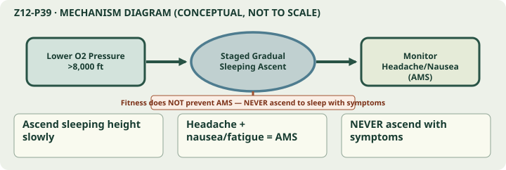

Z12-P39 · Extreme environments · New manuscript
Acclimatize gradually above 8,000 feet and recognize Acute Mountain Sickness
Prevent altitude illness through gradual ascent profiles and catch early Acute Mountain Sickness (AMS) before progression.
When it applies · Travel and sleeping above ~8,000 feet (2,500 meters), especially for lowlanders arriving rapidly from sea level or Midwest plains.
Equipment · Flexible itinerary allowing rest/acclimatization days, hydration and group symptom check-in.

Actions
- Ascend gradually above 8,000 feet (sleeping at moderate intermediate elevations first and limiting daily sleeping-elevation gain) because high physical fitness does NOT protect against altitude illness.[X09, X10]
- Watch for Acute Mountain Sickness (AMS): throbbing headache plus at least one of nausea/loss of appetite, fatigue/weakness, dizziness or poor sleep—never dismiss a high-altitude headache as "just mild dehydration" while continuing higher.[X09]
- Follow the golden rule of altitude: NEVER ascend to sleep higher with active AMS symptoms—rest at the same elevation, hydrate/eat lightly and descend promptly if symptoms fail to improve or worsen.[X09]
Failure recognition · Driving straight from Minnesota to an 11,500-foot trailhead, ignoring a pounding headache and pushing up to a 13,000-foot camp overnight.[X09]
Verify · Confirm a staged acclimatization plan before travel and screen every companion honestly for headache, nausea and energy at every camp above 8,000 feet.[X09, E11, ED]
Stop or change course · Worsening headache, persistent vomiting, unsteady walking or breathlessness at rest stops all ascent—descend immediately and seek medical care.[X09, T02]
Evidence and editorial notes
- E11 · NPS · Hike Smart (current web edition)
- Section: Plan your hike; Stay together · Conditions: Groups on hiking routes
Support: Choose a route suited to the group's abilities and hike at a pace that keeps the group together.
Limitations: Fast hikers moving ahead at junctions is a leading driver of preventable separation. · Conflicting evidence: None; aligns with SAR prevention principles.
Editorial note: Core reference for group accountability and pacing cards. · Specialist reviewer: Group leaders and search and rescue
Primary source · checked 2026-11-24 - T02 · American Red Cross · First Aid Steps (current web edition)
- Section: First Aid Steps > Call 9-1-1 · Conditions: Lay emergency response to unresponsiveness, abnormal breathing or severe bleeding
Support: Activate EMS and get needed equipment. Follow dispatcher directions and act within training.
Limitations: Remote locations may delay EMS arrival, requiring sustained stabilization after activation. · Conflicting evidence: None; aligns with NPS-E.
Editorial note: Mandates early emergency activation and dispatcher adherence. · Specialist reviewer: EMS and wilderness medicine
Primary source · checked 2026-11-24 - X09 · CDC · Travel to High Altitudes (current web edition)
- Section: Travel to High Altitudes > Acclimatization, AMS, HAPE and HACE · Conditions: Mountain travel above ~8,000 feet (2,500 meters)
Support: Ascend gradually to acclimatize; recognize Acute Mountain Sickness (headache, nausea, fatigue) and life-threatening HAPE (shortness of breath at rest, cough) or HACE (ataxia, confusion), for which immediate descent and medical care are essential.
Limitations: Physical fitness does not prevent altitude illness; individual susceptibility varies unpredictably. · Conflicting evidence: None; aligns with NPS-MTN.
Editorial note: Core physiological evidence for Z12 mountain-altitude cards. · Specialist reviewer: Mountain medicine and high-altitude safety
Primary source · checked 2026-11-24 - X10 · NPS · All About Weather: Rocky Mountain National Park (2026 web edition)
- Section: Annual Climate Conditions; seasonal descriptions · Conditions: High-elevation ridges, alpine passes and mountain weather
Support: Mountain temperatures drop sharply with elevation and sunset, afternoon thunderstorms build rapidly over exposed ridges (requiring early starts and turning back below treeline), and steep snowfields conceal runout hazards.
Limitations: Clear morning skies routinely shift to severe lightning and sleet by early afternoon. · Conflicting evidence: None; integrates with E07, E23 and CDC-ALT.
Editorial note: Grounds mountain timing, treeline retreat and elevation-cooling cards. · Specialist reviewer: Mountain safety and meteorology
Primary source · checked 2026-11-25
Source lineage · CDC high-altitude travel and NPS mountain safety; new manuscript · Classification · New manuscript.